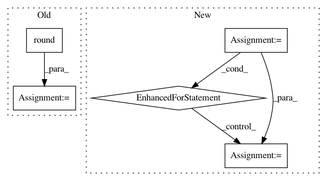

b82419f321b3b52841065e00d1f50945d7e8a2ee,nussl/separation/primitive/hpss.py,HPSS,run,#HPSS#,48
Before Change
for mask in both_masks:
if self.mask_type == self.BINARY_MASK:
mask = np.round(mask)
mask_object = masks.BinaryMask(mask)
elif self.mask_type == self.SOFT_MASK:
mask_object = masks.SoftMask(mask)
else:
raise ValueError("Unknown mask type {self.mask_type}!")
After Change
// make a mask and return
harmonic_masks = np.stack(harmonic_masks, axis=-1)
percussive_masks = np.stack(percussive_masks, axis=-1)
_masks = np.stack([harmonic_masks, percussive_masks], axis=-1)
self.result_masks = []
for i in range(_masks.shape[-1]):
mask_data = _masks[..., i]
if self.mask_type == self.MASKS["binary"]:
mask_data = _masks[..., i] == np.max(_masks, axis=-1)
mask = self.mask_type(mask_data)
self.result_masks.append(mask)
return self.result_masks
In pattern: SUPERPATTERN
Frequency: 3
Non-data size: 5
Instances
Project Name: interactiveaudiolab/nussl
Commit Name: b82419f321b3b52841065e00d1f50945d7e8a2ee
Time: 2020-03-16
Author: prem@u.northwestern.edu
File Name: nussl/separation/primitive/hpss.py
Class Name: HPSS
Method Name: run
Project Name: rtavenar/tslearn
Commit Name: 0537b722ea3bd3740ebb53226214cd67d92f2913
Time: 2019-05-28
Author: johann.faouzi@icm-institute.org
File Name: tslearn/metrics.py
Class Name:
Method Name: itakura_mask
Project Name: deepfakes/faceswap
Commit Name: d93e7b11140c11b43113686849a1c5c74d3a06f2
Time: 2019-10-18
Author: 36920800+torzdf@users.noreply.github.com
File Name: plugins/extract/align/_base.py
Class Name: Aligner
Method Name: finalize